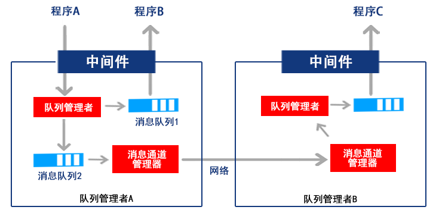

中间件意指Middleware，它是表示网络环境下处于操作系统等系统软件和应用软件之间的一种起连接作用的分布式软件，通过API的形式提供一组软件服务，可使得网络环境下的若干进程、程序或应用可以方便的交流信息和有效的进行交互与协同。简言之，中间件主要解决异构网络环境下分布式应用软件的通信、互操作和协同问题，它可屏蔽并发控制、事务管理和网络通信等各种实现细节，提高应用系统的易移植性、适应性和可靠性。另外，中间件在某种意义上可以理解为中间层软件，通常是指处于系统软件和应用软件之间的中间层次的软件，其主要目的是对应用软件的开发提供更为直接和有效的支撑。
中间件（Middleware）是处于操作系统和应用程序之间的软件，也有人认为它应该属于操作系统中的一部分。人们在使用中间件时，往往是一组中间件集成在一起，构成一个平台(包括开发平台和运行平台)，但在这组中间件中必需要有一个通信中间件，即中间件=平台＋通信，这个定义也限定了只有用于分布式 系统中才能称为中间件，同时还可以把它与支撑软件和实用软件区分开来。中间件是一种独立的系统软件或服务程序，分布式应用软件借助这种软件在不同的 技术之间共享资源。中间件位于客户机/服务器的操作系统之上，管理计算机资源和网络通讯。是连接两个独立应用程序或独立系统的软件。相连接的系统，即使它们具有不同的接口，但通过中间件相互之间仍能交换信息。执行中间件的一个关键途径是信息传递。通过中间件，应用程序可以工作于多平台或OS环境。
